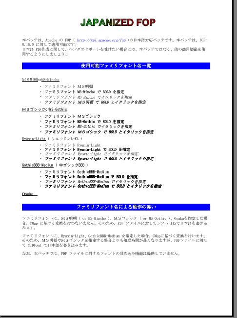
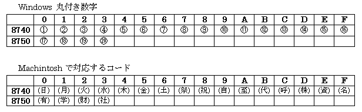

<!DOCTYPE HTML PUBLIC "-//W3C//DTD HTML 4.0 Transitional//EN">
<html>
<head>
<meta HTTP-EQUIV="Content-Type" CONTENT="text/html; charset=iso-2022-jp">
<title>FOP-0.16.0 $BF|K\8l2=%Q%C%A(B</title>
</head>

<body>
<h1>FOP-0.16.0 $BF|K\8l2=%Q%C%A(B</h1>


<br><br><br>
<h1>1. $B$O$8$a$K(B</h1>
<p>$BK\%Q%C%A$O!"(B<a href="http://xml.apache.org/fop">http://xml.apache.org/fop</a> $B$,Ds6!$7$F$$$k(B FOP-0.16.0 $B$GF|K\8l(B ( Type0 $B%U%)%s%H(B ) $B$rI=<(2DG=$K$9$k$?$a$N%Q%C%A$G$9!#K\%Q%C%A$K$h$j!"0J2<$N%U%!%_%j%U%)%s%HL>$,;HMQ2DG=$H$J$j$^$9!#(B</p>
<ul>
<li>$B#M#SL@D+(B or MS-Mincho</li>
<li>$B#M#S%4%7%C%/(B or MS-Gothic</li>
<li>Ryumin-Light</li>
<li>GothicBBB-Medium</li>
<li>Osaka</li>
</ul>
<p>$BK\%Q%C%A$O!"0J2<$N4D6-$G%3%s%Q%$%k$H(B PDF $B:n@.$NF0:n3NG'$r$7$F$*$j$^$9!#(B</p>
<ul>
<li>WindowsNT4.0+SP6a ( $BF|K\8lHG(B ) , SUN J2SE,v1.3.0_01</li>
<li>Solaris2.6 , SUN J2SE,v1.3.0</li>
</ul>

<p><b>$BCm0U!'(B</b>$BK\%Q%C%A$O!"9q:]2=BP1~HG(B JDK $B$G$J$1$l$P!"@5$7$/<B9T$9$k;v$,$G$-$J$$$+$b$7$l$^$;$s!#$^$?!"F|K\8l%U%)%s%HI=<(2DG=$J%^%7%s4D6-$G$J$1$l$P!"K\%Q%C%A$G@8@.$5$l$?(B PDF $B%U%!%$%k$r@5$7$/I=<($G$-$J$$$+$b$7$l$^$;$s!#(B</p>

<br><br><br>
<h1>2. $B%$%s%9%H!<%k(B</h1>

<ol>
<li><a href="http://xml.apache.org/dist/fop/">http://xml.apache.org/dist/fop/</a> $B$h$j(B <a href="http://xml.apache.org/dist/fop/fop-0_16_0.zip">fop-0_16_0.zip</a> ( or <a href="http://xml.apache.org/dist/fop/fop-0_16_0.tar.gz">fop-0_16_0.tar.gz</a> ) $B$r%@%&%s%m!<%I(B</li>
<li>fop-0_16_0.zip ( or .tar.gz ) $B$r2rE`(B</li>
<li><a href="http://www.sourceforge.net/projects/jpfop/">http://www.sourceforge.net/projects/jpfop/</a> $B$h$j(B jpfop_0_16_0.zip ( or jpfop_0_16_0.tar.gz ) $B$r%@%&%s%m!<%I(B</li>
<li>fop-0_16_0 $B%G%#%l%/%H%jG[2<$K(B jpfop_0_16_0.zip ( or .tar.gz ) $B$r2rE`(B</li>
<li><a href="http://xml.apache.org/dist/xalan-j/">http://xml.apache.org/dist/xalan-j/</a> $B$h$j(B <a href="http://xml.apache.org/dist/xalan-j/xalan-j_1_2_2.zip">xalan-j_1_2_2.zip</a> ( or <a href="http://xml.apache.org/dist/xalan-j/xalan-j_1_2_2.zip">xalan-j_1_2_2.tar.gz</a> ) $B$r%@%&%s%m!<%I(B
<li>xalan-j_1_2_2.zip ( or .tar.gz ) $BFb$N(B xerces.jar$B!"(Bxalan.jar$B!"(Bbsf.jar $B$r%/%i%9%Q%9$K4^$a$k!#(B
<dl><dl><dt>$BK\%Q%C%A$G$O!"4J0WE*$K!"(Bxerces.jar$B!"(Bxalan.jar$B!"(Bbsf.jar $B$r(B fop-0_16_0/lib $B%G%#%l%/%H%j$K%3%T!<$9$k$3$H$K$h$j!"<+F0E*$K$3$l$i(B jar $B%U%!%$%k$,%/%i%9%Q%9$K4^$^$l$^$9!#$b$7!"$=$l0J30$N>l=j$K(B jar $B%U%!%$%k$,$"$k>l9g$K$O!"(Bbuild-jpfop.bat $BFb$NJQ?t(B XERCES$B!"(BXALAN$B!"(BBSF $B$K(B jar $B%U%!%$%k$N>l=j$r;XDj$7$F2<$5$$!#(B</dt></dl></dl></li>
<li><dl>
<dt>$B%3%^%s%I%i%$%s$h$j(B</dt>
<dd>&gt; cd fop-0_16_0</dd>
<dd>&gt; build-jpfop ( or ./build-jpfop.sh )</dd>
<dt>$B$r<B9T!#(B</dt>
</dl></li>
<li><b>BUILD SUCCESSED</b> $B$HI=<($5$l$l$P!"F|K\8lBP1~HG(B fop-0.16.0-jp.jar $B40@.(B</li>
<li><dl>
<dt>$BB3$1$F!"%3%^%s%I%i%$%s$h$j(B</dt>
<dd>&gt; cd jpfop</dd>
<dd>&gt; makesample_jpfop ( or ./makesample_jpfop.sh )</dd>
<dt>$B$H<B9T$9$k$3$H$K$h$j!"F|K\8lBP1~HG(B FOP $B$K$h$j!"(Bsample_jpfop.pdf $B$,@8@.(B</dt>
</dl></li>
</ol>
<center>
<p></p>
<b>$B?^!%(Bsample_jpfop.pdf</b>
</center>

<p><b>$BCm0U!'(B</b>$BK\%Q%C%A$O!"F|K\8l%U%)%s%H$7$+Ds6!$7$F$$$^$;$s$,!"4Z9q8l!"Cf9q8l$X$N3HD%$bMF0W$K=PMh$k$O$:$G$9!#$b$7!"K\%Q%C%A$,Ds6!$7$F$$$k0J30$N%U%)%s%H$r;HMQ$7$?$$>l9g!"(Bfop-0_16_0/src/codegen/cidfont $B$d(B fop-0_16_0/src/codegen/cmp $BG[2<$K>pJs$r:n@.$7!"(BFontSetup.java $B$H(B build-jpfop.xml $B$K$=$N>pJs$rDI2C$7$F2<$5$$!#(B</p>

<br><br><br>
<h2>3.1 $BF|K\?M3+H/<T$NJ}$X(B</h2>
<p>$B6/@)$G$O$"$j$^$;$s$,!"0J2<$K$D$$$F!"(B<a href="mailto:jpfop-develop@lists.sourceforge.net">jpfop-develop@lists.sourceforge.net</a> $B$XJs9p$r$7$F$$$?$@$1$k$HHs>o$K=u$+$j$^$9!#K\%a!<%j%s%0%j%9%H$N>\:Y$O!"(B<a href="http://lists.sourceforge.net/lists/listinfo/jpfop-develop">http://lists.sourceforge.net/lists/listinfo/jpfop-develop</a> $B$r;2>H$7$F2<$5$$!#(B</p>
<dl>
<dt><b>$B%3%s%Q%$%k$K$D$$$F(B</b></dt>
<dd>$B$"$J$?$N4D6-(B ( OS , JDK $B$J$I(B ) $B$G!"K\%Q%C%A$rMQ$$$F(B fop-0.16.0-jp.jar $B$,:n@.$G$-$?$+H]$+!#FC$K!"(BLinux$B!"(BBSD$B!"(BMachintosh$B!"(BHP-UX $BEy$N4D6-$G$NJs9p$OHs>o$K=u$+$j$^$9!#:n@.$G$-$J$+$C$?>l9g!"H/@8Nc30$bJs9p$7$F$$$?$@$1$k$H=u$+$j$^$9!#(B</dd>
<dt><br></dt>
<dt><b>$B<B9T$K$D$$$F(B</b></dt>
<dd>$B$"$J$?$N4D6-$GF|K\8l(B PDF $B$r:n@.$7$?:]!"LdBj$,$"$k$+H]$+!#K\%Q%C%A$O!"MM!9$J4D6-$G$N%F%9%H$,IT==J,$J$?$a!"$"$J$?$N4D6-$G$OLdBj$,$"$k$+$b$7$l$^$;$s!#Nc$($P!"(BWindows $B$H(B Machintosh $B$G$O!"%7%U%H(B JIS $B$N(B 0x8740 $BIU6a$N%3!<%I%]%$%s%H$,0[$J$C$F$$$^$9!#(B
<blockquote></blockquote>
$B$3$l$i$NJ8;z$r;HMQ$7$?:]!"J8;z2=$1Ey$NLdBj$,$"$k$+$b$7$l$^$;$s!#$7$+$7!";d$N<j85$K(B Machintosh $B4D6-$,$J$$$?$a!"$3$l$i$N3NG'$r9T$&$3$H$,$G$-$F$$$^$;$s!#(B</dd>
<dt><br></dt>
<dt><b>$B1\Mw$K$D$$$F(B</b></dt>
<dd>$BK\%Q%C%A$N1\Mw$O!"8=:_!"(BWindows $BMQ(B Adobe Acrobat Reader 4.0/4.05a $B$G$N$_$7$+9T$C$F$$$^$;$s!#(BMachintosh $BMQ(B Acrobat Reader $B$d(B UNIX $BMQ(B Acrobat Reader ( acroread ) $B$G$N1\Mw$,@5>o$K9T$o$l$k$+$rJs9p$7$FD:$1$k$HHs>o$K=u$+$j$^$9!#$^$?!"LdBjJs9p$N:]$K$I$N%W%i%C%H%U%)!<%`$G:n@.$7$?(B PDF $B$r1\Mw=PMh$J$+$C$?$N$+$b=q$$$F$$$?$@$1$k$H=u$+$j$^$9!#(B</dd></dl>

<br><br><br>
<h1>3. $B%=!<%9(B</h1>

<h2>3.1 $B=$@5$7$?%/%i%9(B</h2>

<p>$BK\%Q%C%A$G$O!"(Bfop-0.16.0 $B$N0J2<$N%/%i%9$r=$@5$7$F$$$^$9!#(B</p>
<blockquote><dl>
<dt>org.apache.fop.layout.LineArea</dt>
<dt>org.apache.fop.pdf.PDFFontDescriptor</dt>
<dt>org.apache.fop.pdf.PDFDocument</dt>
<dt>org.apache.fop.render.pdf.PDFRenderer</dt>
<dt>org.apache.fop.render.pdf.FontSetup</dt>
</dl></blockquote>


<h3>3.1.1 org.apache.fop.layout.LineArea</h3>
<blockquote>
<p>$B=$@5$7$?$N$O(B addText() $B%a%=%C%I$G$9!#F|K\8l$O(B 2 $B%P%$%HJ8;z$J$N$G!"HO0O$O(B 0 $B$+$i(B 65535 $B$G$9!#=>Mh!"(B127 $B0J>e$NCM$r$H$kJ8;z$,$"$C$?>l9g!"<+F0E*$K(B &quot;#&quot; $B$KJQ49$7$F$$$?$N$G!"$=$N%3!<%I$r%3%a%s%H%"%&%H$7$^$7$?!#(B</p>
<p>$B$^$?!"=>Mh!"C18l$4$H$K2~9T$NH=Dj$r9T$C$F$$$^$7$?$,!"F|K\8l$G$OC18l$rH>3Q%9%Z!<%9$G6h@Z$i$J$$$?$a!"@5$7$/2~9T$,9T$o$l$^$;$s$G$7$?!#$=$N$?$a!"F|K\8l$N>l9g!"(B1 $B9T$KI=<($G$-$kJ8;z?t$r%*!<%P!<$7$?:]$K2~9T$9$k%3!<%I$rDI2C$7$^$7$?!#(B</p>
</blockquote>


<h3>3.1.2 org.apache.fop.pdf.PDFFontDescriptor</h3>
<blockquote>
<p>$B=$@5$7$?$N$O(B toPDF() $B%a%=%C%I$G$9!#(BRectangle.toPDF() $B$NLa$jCM$O!"(Bbyte[] $B$J$N$G!"4{B8$N%3!<%I$G$O(B Rectangle $B$KG[Ns$r@5$7$/I=<($7$F$$$J$$!#$3$l$O!"$*$=$i$/(B toPDF() $B%a%=%C%I$N(B BUG $B$G$7$g$&!#(B</p>
<dl>
<dt>$B=$@5A0!'(B</dt>
<dd><code>
p.append("\n/FontBBox ");    p.append(fontBBox.toPDF());
</code></dd>
<dt>$B=$@58e!'(B</dt>
<dd><code>
p.append("\n/FontBBox ");    p.append(new String(fontBBox.toPDF()));
</code></dd>
</dl>
</blockquote>


<h3>3.1.3 org.apache.fop.pdf.PDFDocument</h3>
<blockquote>
<p>$B=$@5$7$?$N$O(B makeFont() $B%a%=%C%I$H(B makeFontDescriptor() $B%a%=%C%I$G$9!#(B</p>

<p><b>makeFont() $B%a%=%C%I(B : </b>FontDescriptor $B$,;XDj$5$l$F$$$J$$:]!"(BCIDFont $B$J$N$+H=Dj$7!"(BCIDFont $B$N>l9g!"(BType0 $B%U%)%s%H$HG'<1$9$k$h$&$K=$@5$7$^$7$?!#(B</p>

<p><b>makeFontDescriptor() $B%a%=%C%I(B : </b>$B%*%W%7%g%s$NB0@-$rDs6!$7$?(B OptionalFontDescriptor $B%/%i%9$,0z?t$GEO$5$l$?>l9g$H$=$&$G$J$$>l9g$N=hM}$rJ,$1$^$7$?!#$^$?!"(BPDFFontDescriptor $B%*%V%8%'%/%H$r%$%s%9%?%s%92=$9$k:]!"(BItalicAngle $B$H(B StemV $B$N0LCV$,5U$K$J$C$F$$$^$7$?!#$3$l$O!"$*$=$i$/(B BUG $B$G$7$g$&!#(B</p>
</blockquote>


<h3>3.1.4 org.apache.fop.render.pdf.PDFRenderer</h3>
<blockquote>
<p>$B=$@5$7$?$N$O(B renderInlineArea() $B%a%=%C%I$G$9!#(BType0 $B%U%)%s%H(B ( CIDFont ) $B$N>l9g$N=hM}$rDI2C$7$^$7$?!#$^$:!"(BUTF-8 $B$NJ8;zNs$r(B CIDFont $B$G;XDj$7$?%(%s%3!<%G%#%s%0$GJQ49$7$^$9!#(BCIDFontType2 $B$N>l9g!"%3!<%I%]%$%s%H$O(B TrueType $B$J$N$G$=$N$^$^=q$-=P$7$^$9!#(B</p>

<p>CIDFontType0 $B$N>l9g!"%3!<%I%]%$%s%H$O(B Adobe Type1 $B$J$N$G!"(BCIDFont $B$G;XDj$7$?(B CMap $B$K4p$E$$$F%^%C%T%s%0$r9T$$$^$9!#$=$7$F!"(BItalic $B$N>l9g!"J8;z$r<P$a$K$7$^$9!#(BBOLD $B$N>l9g!"0LCV$r$:$i$7$J$,$i(B 4 $B2s=q$/=hM}$r$7$^$9!#(B</p>
</blockquote>


<h3>3.1.5 org.apache.fop.render.pdf.FontSetup</h3>
<blockquote>
<p>$B=$@5$7$?$N$O(B setup() $B%a%=%C%I$G$9!#F|K\8l(B Font $B$rDI2C$7$^$7$?!#(B</p>
</blockquote>


<br><br>
<h2>3.2 $B?75,$KDI2C$5$l$k%/%i%9$H%$%s%?%U%'%$%9(B</h2>

<p>$BK\%Q%C%A$G$O!"(Bfop-0.16.0 $B$KBP$7$F0J2<$N%/%i%9$H%$%s%?%U%'%$%9$r?75,$KDI2C$7$^$9!#(B</p>
<blockquote><dl>
<dt>org.apache.fop.layout.OptionalFontDescriptor</dt>
<dt>org.apache.fop.pdf.PDFCIDFont</dt>
<dt>org.apache.fop.pdf.PDFOptionalFontDescriptor</dt>
<dt>org.apache.fop.pdf.PDFFontType0</dt>
<dt>org.apache.fop.render.pdf.CIDFont</dt>
<dt>org.apache.fop.render.pdf.CMap</dt>
</dl></blockquote>


<h3>3.2.1 org.apache.fop.layout.OptionalFontDescriptor</h3>
<blockquote>
<p>$B%*%W%7%g%s$NB0@-$rDs6!$7$?(B FontDescriptor $B%$%s%?%U%'%$%9$G$9!#(BFontDescriptor $B$N>\:Y$K$D$$$F$O!"(BPDF1.3 Reference Manual [<a href="#references_1">1</a>] 7.11 Font descriptors p.222 $B$r;2>H$7$F2<$5$$!#(B</p>
</blockquote>


<h3>3.2.2 org.apache.fop.pdf.PDFCIDFont</h3>
<blockquote>
<p>PDF $BCf$N(B CIDFont $B%*%V%8%'%/%H$rI=$9%/%i%9$G$9!#(BCIDFont $B$N>\:Y$K$D$$$F$O!"(BPDF1.3 Reference Manual [<a href="#references_1">1</a>] 7.8 CIDFonts p.210 $B$d(B Adobe CMap and CID Font Files Specification Version 1.0 [<a href="#references_2">2</a>] $B$r;2>H$7$F2<$5$$!#(B</p>
</blockquote>


<h3>3.2.3 org.apache.fop.pdf.PDFOptionalFontDescriptor</h3>
<blockquote>
<p>PDF $BCf$N(B FontDescriptor $B$N%*%W%7%g%s$NB0@-$rI=$9%/%i%9$G$9!#(B</p>
</blockquote>


<h3>3.2.4 org.apache.fop.pdf.PDFFontType0</h3>
<blockquote>
<p>PDF $BCf$N(B Type0 $B%U%)%s%H$rI=$9%/%i%9$G$9!#(BType0 $B%U%)%s%H$N>\:Y$K$D$$$F$O!"(BPDF1.3 Reference Manual [<a href="#references_1">1</a>] 7.7.7 Type0 Fonts p.207 $B$r;2>H$7$F2<$5$$!#(B</p>
</blockquote>


<h3>3.2.5 org.apache.fop.render.pdf.CIDFont</h3>
<blockquote>
<p>CIDFont $B$rI=$9%/%i%9$G$9!#(B</p>
</blockquote>


<h3>3.2.6 org.apache.fop.render.pdf.CIDFontWidthsEntry</h3>
<blockquote>
<p>CIDFont $B$N(B Width $B$K4^$^$l$k%(%s%H%j$rI=$9%/%i%9$G$9!#(BCIDFont $B$G$O!"(B</p>
<ul>
<li>C [ W1 W2 ... Wn ]</li>
<li>C<sub>first</sub> C<sub>last</sub> W</li>
</ul>
<p>$B$N(B 2 $B<oN`$N%U%)!<%^%C%H$,$"$j$^$9!#>\:Y$O!"(BPDF1.3 Reference Manual [<a href="#references_1">1</a>] 7.8.3 Character widths in CIDFonts p.213 $B$r;2>H$7$F2<$5$$!#(B</p>
</blockquote>
</blockquote>


<h3>3.2.7 org.apache.fop.render.pdf.CMap</h3>
<blockquote>
<p>$B%3!<%I%]%$%s%H$rI=$9%$%s%?%U%'%$%9$G$9!#;XDj$5$l$?%3!<%I%]%$%s%H$r(B CMap $B$K=>$C$F%^%C%T%s%0$7$^$9!#F|K\8l$N(B Adobe $B%3!<%I%]%$%s%H$K$D$$$F$O!"(BAdobe-Japan1-4 Character Collection for CID-Keyed Fonts [<a href="#references_3">3</a>] $B$r;2>H$7$F2<$5$$!#(B</p>
</blockquote>

<h3>3.2.8 org.apache.fop.render.pdf.Widths</h3>
<blockquote>
<p>Width $BB0@-$rI=$9%/%i%9$G$9!#(B</p>
</blockquote>


<br><br>
<h2>3.3 $B?75,$K:n@.$5$l$k%/%i%9(B</h2>

<p>$BK\%Q%C%A$G$O!"(Bfop-0.16.0 $B$KBP$7$F!"(Bcodegen $B$rMxMQ$7$F0J2<$N%/%i%9$,(B XML $B%U%!%$%k$+$i<+F0E*$K@8@.$5$l$^$9!#(B</p>
<blockquote><dl>
<dt>org.apache.fop.render.pdf.cmap._90ms_RKSJ_H</dt>
<dt>org.apache.fop.render.pdf.fonts.jp.GothicBBBMedium</dt>
<dt>org.apache.fop.render.pdf.fonts.jp.MSGothic</dt>
<dt>org.apache.fop.render.pdf.fonts.jp.MSGothicAlias</dt>
<dt>org.apache.fop.render.pdf.fonts.jp.MSGothicBold</dt>
<dt>org.apache.fop.render.pdf.fonts.jp.MSGothicBoldAlias</dt>
<dt>org.apache.fop.render.pdf.fonts.jp.MSGothicBoldItalic</dt>
<dt>org.apache.fop.render.pdf.fonts.jp.MSGothicBoldItalicAlias</dt>
<dt>org.apache.fop.render.pdf.fonts.jp.MSGothicItalic</dt>
<dt>org.apache.fop.render.pdf.fonts.jp.MSGothicItalicAlias</dt>
<dt>org.apache.fop.render.pdf.fonts.jp.MSMincho</dt>
<dt>org.apache.fop.render.pdf.fonts.jp.MSMinchoAlias</dt>
<dt>org.apache.fop.render.pdf.fonts.jp.MSMinchoBold</dt>
<dt>org.apache.fop.render.pdf.fonts.jp.MSMinchoBoldAlias</dt>
<dt>org.apache.fop.render.pdf.fonts.jp.MSMinchoBoldItalic</dt>
<dt>org.apache.fop.render.pdf.fonts.jp.MSMinchoBoldItalicAlias</dt>
<dt>org.apache.fop.render.pdf.fonts.jp.MSMinchoItalic</dt>
<dt>org.apache.fop.render.pdf.fonts.jp.MSMinchoItalicAlias</dt>
<dt>org.apache.fop.render.pdf.fonts.jp.Osaka</dt>
<dt>org.apache.fop.render.pdf.fonts.jp.RyuminLight</dt>
</dl></blockquote>


<br><br><br>
<h1>4. $B4{CN$NF|K\8lBP1~%Q%C%A$NLdBj(B</h1>

<p>$BK\%I%-%e%a%s%H$G$O!"0lIt$r=|$-!"F|K\8lBP1~$K$*$1$k4{CN$NLdBj$N$_=q$+$l$F$$$^$9!#(BFOP $B$NLdBj$K$D$$$F$O!"(Bfop-dev@xml.apache.org $B$d(B fop-cvs@xml.apache.org $B$r;2>H$7$F2<$5$$!#(B</p>

<ul>
<li><b>SVG $B$G$NF|K\8l(B</b>
<blockquote>
$BK\%Q%C%A$G$O(B SVG $B$G$NF|K\8lI=<($r%5%]!<%H$7$F$$$^$;$s!#(B
</blockquote></li>

<li><b>$B%O%$%U%M!<%7%g%s(B</b>
<blockquote>
$BF|K\8l$HF|K\8l0J30$,4^$^$l$kJ8=q$G!"F|K\8l0J30$NC18l$,9T$N:G8e$GJ,3d$5$l$k:]!"%O%$%U%M!<%7%g%s$r;XDj$7$F$b%O%$%U%M!<%7%g%s$=$NC18l$,%O%$%U%M!<%7%g%s$5$l$^$;$s!#$3$l$O!"F|K\8lJ8=q$G$O%O%$%U%M!<%7%g%s$r;HMQ$7$J$$$+$i$G$9!#(B
</blockquote></li>

<li><b>Unicode $BL$%5%]!<%H(B</b>
<blockquote>
PDF1.3 Reference Manual [<a href="#references_1">1</a>] 7.7 Fonts p.199 $B$d(B 7.10.1 ToUnicode CMaps p.219 $B$K$h$k$H!"(BType0 $B%U%)%s%H$G$b(B ToUnicode $BB0@-$rMQ$$$k$3$H$K$h$jJ8;z%3!<%I$r(B Unicode $B$K%^%C%T%s%02DG=$H$J$C$F$$$^$9!#$7$+$7!"K\%Q%C%A$G$O$3$N5!G=$r%5%]!<%H$7$F$$$^$;$s!#$3$l$O!"F|K\8l2=%Q%C%A$H$$$&$h$j$b(B FOP $B$NLdBj$+$b$7$l$^$;$s!#(B
</blockquote></li>

<li><b>$BKd$a9~$_(B CMap $BL$%5%]!<%H(B</b>
<blockquote>
PDF1.3 Reference Manual [<a href="#references_1">1</a>] 7.10 CMaps p.117 $B$K$h$k$H!"(BPDF $BJ8=qFb$K(B CMap $B$N>pJs$rKd$a9~$`$3$H$,$G$-$^$9!#$7$+$7!"K\%Q%C%A$G$O(B CMap $B>pJs$r(B PDF $BJ8=qFb$KKd$a9~$`$3$H$O$G$-$^$;$s!#(B
</blockquote></li>

<li><b>$BKd$a9~$_%U%)%s%HL$%5%]!<%H(B</b>
<blockquote>
PDF1.3 Reference Manual [<a href="#references_1">1</a>] $B$N(B 7.11 Font descriptors p.223 $B$K$h$k$H!"(BFontDescriptor $B$G(B PDF $BJ8=qFb$K%U%)%s%H$rKd$a9~$`$3$H$,2DG=$H$J$C$F$$$^$9!#$7$+$7!"K\%Q%C%A$G$OF|K\8l%U%)%s%H$r(B PDF $BJ8=qFb$KKd$a9~$`$3$H$O$G$-$^$;$s!#$3$l$O!"F|K\8l2=%Q%C%A$H$$$&$h$j$b(B FOP $B$NLdBj$+$b$7$l$^$;$s!#(B
</blockquote></li>

<li><b>$B%U%)%s%H%5%V%;%C%HL$%5%]!<%H(B</b>
<blockquote>
PDF1.3 Reference Manual [<a href="#references_1">1</a>] $B$N(B 7.7.4 Font Subsets p.204 $B$K$h$k$H!"(BFont $B$N(B BaseFont $B$d(B FontDescriptor $B$N(B FontName $B$NCM$N7A<0$O!"(BPostscript $BA0$K%f%K!<%/$J(B 6 $BBgJ8;z$rIU$1$k$H$J$C$F$$$^$9!#$7$+$7!"K\%Q%C%A$G$O%f%K!<%/$J(B 6 $BBgJ8;z$,IU$-$^$;$s!#(B
</blockquote></li>

<li><b>$B2<@~(B</b>
<blockquote>
$BH>3Q%9%Z!<%9$G6h@Z$i$l$?J#?t$NC18l$K2<@~$r0z$/$H!"C18lKh$K2<@~$,ES@Z$l$F$7$^$7$^$9!#$3$l$O!"(BFOP $B$N%P%0$G$"$j!";~4|%P!<%8%g%s$G$O2~=$$5$l$^$9!#>\:Y$O!"(Bfop-dev@apache.org $B$r;2>H$7$F2<$5$$!#(B
</blockquote></li>
</ul>


<br><br><a name="references"><br></a>
<h1>5. $B%j%U%!%l%s%9(B</h1>
<ol>
<a name="references_1"><li></a>Portable Document Format Reference Manual Version 1.3$B!'(B<br>
<a href="http://partners.adobe.com/asn/developer/acrosdk/DOCS/PDFRef.pdf">http://partners.adobe.com/asn/developer/acrosdk/DOCS/PDFRef.pdf</a></li>
<a name="references_2"><li></a>Adobe CMap and CID Font Files Specification Version 1.0$B!'(B<br>
<a href="http://partners.adobe.com/asn/developer/PDFS/TN/5014.CMap_CIDFont_Spec.pdf">http://partners.adobe.com/asn/developer/PDFS/TN/5014.CMap_CIDFont_Spec.pdf</a></li>
<a name="references_3"><li></a>Adobe-Japan1-4 Character Collection for CID-Keyed Fonts$B!'(B<br>
<a href="http://partners.adobe.com/asn/developer/PDFS/TN/5078.Adobe-Japan1-4.pdf">http://partners.adobe.com/asn/developer/PDFS/TN/5078.Adobe-Japan1-4.pdf</a></li>
<a name="references_4"><li></a>Adobe Font Metrics File Format Specification Version 4.1:<br>
<a href="http://partners.adobe.com/asn/developer/PDFS/TN/5004.AFM_Spec.pdf">http://partners.adobe.com/asn/developer/PDFS/TN/5004.AFM_Spec.pdf</a></li>
</ol>

</body>
</html>
